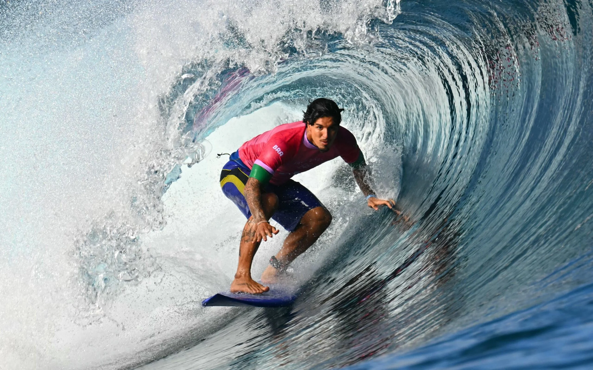
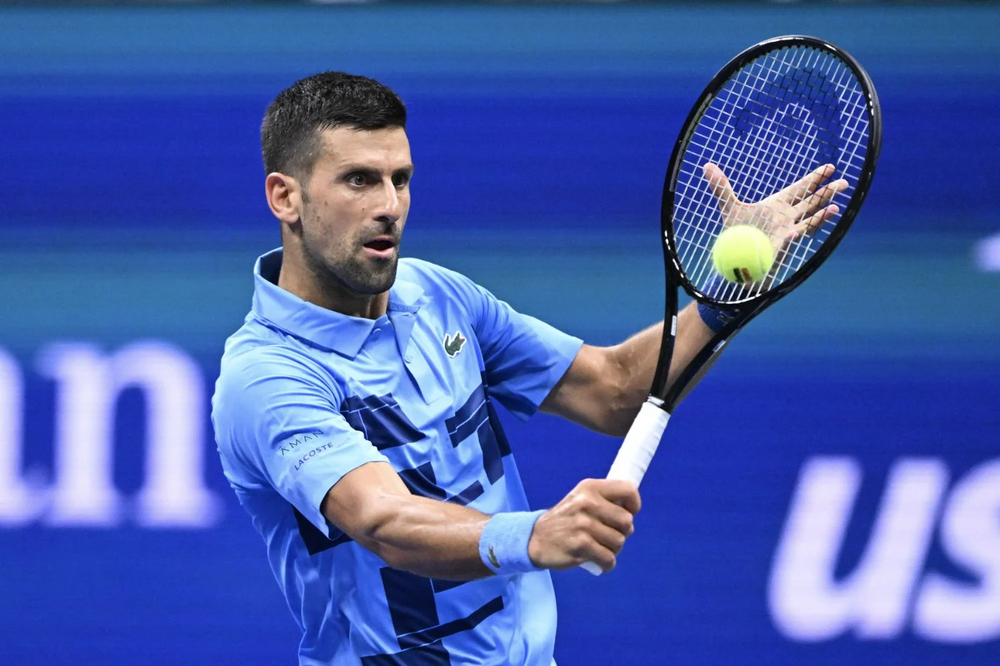
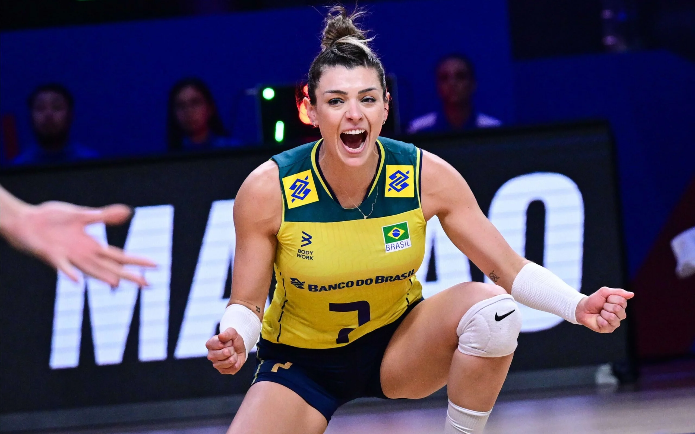

O Barcelona encerrou uma série de três jogos sem vencer no Campeonato Espanhol ao golear o Mallorca (6º) fora de casa por 5 a 1 nesta terça-feira (3), em partida da 19ª rodada do Campeonato Espanhol antecipado para a disputa da Supercopa da Espanha.Em duelo com chances para ambos os lados e muitos impedimentos do Mallorca, o Barça conseguiu a vitória com gols de Ferran Torres (12'), Raphinha (56' de pênalti e 74'), Frenkie De Jong (79') e Pau Víctor (84'), enquanto os anfitriões marcaram com Vedat Muriqi (43').O time catalão pressionou a saída de bola do adversário e controlou a posse de bola até aproveitar um erro defensivo para abrir o placar. Johan Mojica tentou afastar e chutou a bola em cima de Martin Vlajent, Torres aproveitou a sobra e bateu para superar o goleiro Leo Román.

O tricampeão mundial de surf, Gabriel Medina, está no Peru esta semana para uma surf trip que já vem chamando a atenção. Imagens do surfista em ação começaram a circular nas redes sociais, revelando momentos impressionantes em Pacasmayo, uma das joias do surf peruano. Localizada ao norte do país, essa esquerda peruana é conhecida por sua onda longa e perfeitamente formada, considerada uma das esquerdas mais extensas e consistentes do mundo.Essa onda é famosa por tirar o folego.
Surf

O tenista sérvio Novak Djokovic começará a temporada de 2025 no ATP 250 de Brisbane, na Austrália, anunciaram os organizadores do torneio nesta quarta-feira.Aos 37 anos e agora treinado por Andy Murray, Djokovic vai se preparar em Brisbane para o grande objetivo do início do ano, o Aberto da Austrália, onde tentará seu 11º título. O sérvio teve um 2024 frustrante, sem nenhum título no circuito da ATP, com apenas a medalha de ouro nos Jogos Olímpicos de Paris.
Tenis

Sempre que está em quadra a internet vai à loucura, e nas Olimpíadas de Paris não podia ser diferente. Rosamaria Montibeller, atleta da seleção, dominou os memes e posts nas redes sociais durante a estreia da seleção nos Jogos de Paris, com vitória tranquila sobre o Quênia, na manhã desta segunda. A catarinense de Nova Trento foi uma das maiores pontuadoras da partida e caiu nas graças dos internautas. Somente na rede social X, o nome de Rosamaria foi é o segundo assunto mais comentado do país.
Volei

O basquetebol é um esporte coletivo de invasão praticado entre duas equipes. O jogo é disputado com uma bola, tendo como objetivo colocá-la no cesto fixado nas extremidades da quadra. Atualmente, o basquetebol é um dos esportes olímpicos mais populares no mundo. Nas escolas, é um dos esportes mais praticados nas aulas de educação física. O termo “basquetebol” vem da língua inglesa, onde “basket” significa “cesto” e “ball”, bola. Portanto, no inglês é Basketball.
Basquete
Noticias dos Esportes
George Russell não recuou para Max Verstappen após o tetracampeão ter dito que havia perdido o respeito pelo piloto da Mercedes no GP do Catar, quando George teria forçado uma punição ao piloto da Red Bull na sala dos comissários após ter sido atrapalhado na classificação. O britânico detonou o que classifica como bullying praticado pelo rival holandês e revelou uma ameaça feita antes da corrida da semana passada. “Acho tudo muito irônico, considerando que no sábado à noite ele disse que iria se esforçar propositalmente para bater em mim e, entre outras palavras, “enfiar a p**** da minha cabeça na parede. Questionar a integridade de alguém como pessoa, ao fazer comentários como esse no dia anterior, acho muito irônico e não vou sentar aqui e aceitar isso. As pessoas têm sofrido bullying por Max há anos e você não pode questionar suas habilidades de direção. Mas ele não consegue lidar com as adversidades sempre que algo vai contra ele", dispara.